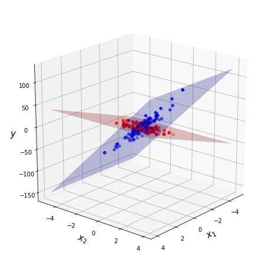
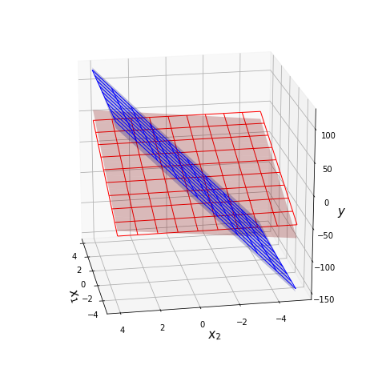

Example¶
Requirements¶
It is recommended make virtualenv and install all next packages in this virtualenv.
torch==1.4.0
numpy==1.18.1
matplotlib==2.2.4
mixturelib==0.2.*
Include packages.
import torch
import numpy as np
import matplotlib.pyplot as plt
from mpl_toolkits.mplot3d import Axes3D
from mixturelib.mixture import MixtureEmSample
from mixturelib.local_models import EachModelLinear
from mixturelib.hyper_models import HyperExpertNN, HyperModelDirichlet
Preparing the dataset¶
Generate dataset. This dataset contains two different planes.
np.random.seed(42)
N = 200
noise_component = 0.8
noise_target = 5
X = np.random.randn(N, 2)
X[:N//2, 1] *= noise_component
X[N//2:, 0] *= noise_component
real_first_w = np.array([[10.], [0.]])
real_second_w = np.array([[0.], [30.]])
y = np.vstack([X[:N//2]@real_first_w, X[N//2:]@real_second_w])\
+ noise_target*np.random.randn(N, 1)
Dataset visualisation. Blue color corresponds to one local model and red corresponds to another.
Convert the dataset into torch.tensor format.
torch.random.manual_seed(42)
X_tr = torch.FloatTensor(X)
Y_tr = torch.FloatTensor(y)
Mixture of Model¶
Consider an example of a mixture of model. In this case the contribution of each model does not depend on the sample from dataset.
Init local models. We consider linear model
mixturelib.local_models.EachModelLinear as local model.
torch.random.manual_seed(42)
first_model = EachModelLinear(input_dim=2)
secode_model = EachModelLinear(input_dim=2)
list_of_models = [first_model, secode_model]
Init hyper model — mixturelib.hyper_models.HyperModelDirichlet.
In this case contribution of each model does not depend on sample from dataset.
It is suggested that the contribution of each model has a
Dirichlet distribution.
The hyper model parameters is a parameter of Dirichlet distribution.
HpMd = HyperModelDirichlet(output_dim=2)
Init mixture model. The mixture model is simple function which weighs local models answers. Weights are generated by hyper model HpMd.
mixture = MixtureEmSample(input_dim=2, K=2,
HyperParameters={'beta': 1.},
HyperModel=HpMd,
ListOfModels=list_of_models)
Train mixture model on the give dataset.
mixture.fit(X_tr, Y_tr)
Local models parameters after training procedure. In our task, each model is a simple plane in 3D space.
predicted_first_w = mixture.ListOfModels[0].W.numpy()
predicted_second_w = mixture.ListOfModels[1].W.numpy()
Visualization of the real and predicted planes on the chart.
fig = plt.figure(figsize=(8, 8))
ax = fig.add_subplot(111, projection='3d')
grid_2d = np.array(np.meshgrid(range(-5, 5), range(-5, 5)))
xx, yy = grid_2d
first_z = (predicted_first_w.reshape([-1, 1, 1])*grid_2d).sum(axis=0)
second_z = (predicted_second_w.reshape([-1, 1, 1])*grid_2d).sum(axis=0)
ax.plot_surface(xx, yy, first_z, alpha = 0.25, color = 'red', label='predicted')
ax.plot_surface(xx, yy, second_z, alpha = 0.25, color = 'blue', label='predicted')
first_z = (real_first_w.reshape([-1, 1, 1])*grid_2d).sum(axis=0)
second_z = (real_second_w.reshape([-1, 1, 1])*grid_2d).sum(axis=0)
ax.plot_wireframe(xx, yy, first_z, linewidth=1, color = 'red')
ax.plot_wireframe(xx, yy, second_z, linewidth=1, color = 'blue')
ax.view_init(20, 170)
ax.set_xlabel('$x_1$', fontsize=15, fontweight="bold")
ax.set_ylabel('$x_2$', fontsize=15, fontweight="bold")
ax.set_zlabel('$y$', fontsize=15, fontweight="bold")
plt.show()
The surfaces with grid are real planes. The surfaces without grid are predicted planes.
Mixture of Experts¶
Now consider an example of a mixture of experts on the same dataset. In this case contribution of each model is depend on sample from dataset.
Init local models. We consider linear model
mixturelib.local_models.EachModelLinear as local model.
torch.random.manual_seed(42)
first_model = EachModelLinear(input_dim=2)
secode_model = EachModelLinear(input_dim=2)
list_of_models = [first_model, secode_model]
Init hyper model — gate function
mixturelib.hyper_models.HyperExpertNN. In this case contribution of
each model is depend on sample from dataset. Gate function is a simple neural
network with softmax on the last layer.
HpMd = HyperExpertNN(input_dim=2, hidden_dim=5,
output_dim=2, epochs=100)
Init mixture model. The mixture model is simple function which weighs local models answers. Weights are generated by hyper model HpMd.
mixture = MixtureEmSample(input_dim=2, K=2,
HyperParameters={'beta': 1.},
HyperModel=HpMd,
ListOfModels=list_of_models)
Train mixture model on the give dataset.
mixture.fit(X_tr, Y_tr)
Local models parameters after training procedure. In our task, each model is a simple plane in 3D space.
predicted_first_w = mixture.ListOfModels[0].W.numpy()
predicted_second_w = mixture.ListOfModels[1].W.numpy()
Visualization of the real and predicted planes on the chart.
fig = plt.figure(figsize=(8, 8))
ax = fig.add_subplot(111, projection='3d')
grid_2d = np.array(np.meshgrid(range(-5, 5), range(-5, 5)))
xx, yy = grid_2d
first_z = (predicted_first_w.reshape([-1, 1, 1])*grid_2d).sum(axis=0)
second_z = (predicted_second_w.reshape([-1, 1, 1])*grid_2d).sum(axis=0)
ax.plot_surface(xx, yy, first_z, alpha = 0.25, color = 'red', label='predicted')
ax.plot_surface(xx, yy, second_z, alpha = 0.25, color = 'blue', label='predicted')
first_z = (real_first_w.reshape([-1, 1, 1])*grid_2d).sum(axis=0)
second_z = (real_second_w.reshape([-1, 1, 1])*grid_2d).sum(axis=0)
ax.plot_wireframe(xx, yy, first_z, linewidth=1, color = 'red')
ax.plot_wireframe(xx, yy, second_z, linewidth=1, color = 'blue')
ax.view_init(20, 170)
ax.set_xlabel('$x_1$', fontsize=15, fontweight="bold")
ax.set_ylabel('$x_2$', fontsize=15, fontweight="bold")
ax.set_zlabel('$y$', fontsize=15, fontweight="bold")
plt.show()
The surfaces with grid are real planes. The surfaces without grid are predicted planes.